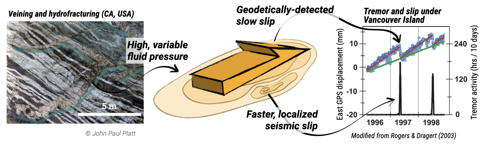

Source physics of slow earthquakes
Collaborators: Giuseppe Costantino (ENS),
Harsha Bhat (ENS),
Nikolai Shapiro (ISTerre),
William B. Frank (MIT)
Associated publications:
Farge et al. (2020).

While regular earthquakes are caused by rapid slip on a fault, radiating elastic energy away as potentially destructive seismic waves, slow earthquakes are slow energy release phenomena, which consume potential tectonic strain energy on the fault almost silently. The study of their behavior brings fundamental insights into how faults dissipate energy.
The study from the seismic radiation from slow-earthquakes reveals fundamental difference with regular earthquakes (Farge et al., 2020): their duration appears to be independent of their magnitude. Although observational constraints might bias this observation (Ide & Beroza, 2023), this suggests that the source physics of these events is dominated by fundamentally different factors than regular earthquakes.
Slow earthquakes seem to be extremely sensitive to external stress perturbations. This feature makes them the ideal phenomenon to study the impulse response of fault systems, with the objective to understand how faults communicate and organize at a population scale (Farge & Brodsky, 2025), how stress organizes on the fault as it loads and more fundamentally to probe the physics of fault slip and loading (ongoing collaboration with Aitaro Kato, ERI).
Slow earthquakes seem to dissipate tectonic strain energy with much more efficiency than regular earthquakes, without radiating away much seismic energy. In an ongoing collaboration with Harsha Bhat (ENS) and Giuseppe Costantino (ENS), we are comparing the energy budget of slow and regular earthquakes, as a way to unify our understanding of those two phenomena.